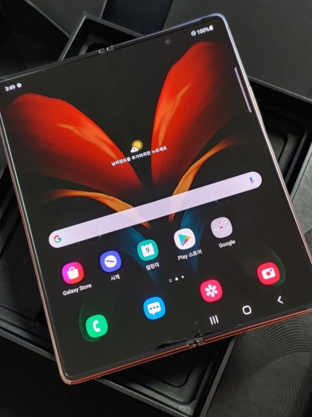

스마트폰 정보
- Galaxy S21
- Galaxy NOTE20
- Galaxy Z FOLD
- IPHONE 12 PRO
- IPHONE 12 MINI
#Galaxy Z FOLD Spec.

- 프로세스 퀄컴 스냅드래곤 865+ SM8250-AB Platform.
- 메모리 12 GB LPDDR5 SDRAM, 256 GB UFS 3.1 규격 내장 메모리
- 메인 디스플레이 7.6인치 5:4 비율 2208 X 1768 Infinity-O Flex Display (372 ppi) 멀티터치 지원 정전식 터치 스크린
커버 디스플레이 6.23 인치 25:9 비율 2326 X 840 Infinity-O Display (387 ppi) 멀티터치 지원 정전식 터치 스크린
- 네트워크 5G NR 4G LTE 3G WCDMA 2G GSM
- 카메라 전면 1,000만 화소
후면 카메라 후면 기본 1200만 화소,OIS지원 F1.5-F2.4, 망원 6400만화소 OIS지원 F2.2, 광각 1200만 화소 F2.4
- 배터리 내장형 Li-Ion 4500 mAh
- 운영체제 안드로이드 11
- 규격 71.2 × 151.7 × 7.9 mm, 169 g
- 색상 미스틱 브론즈, 미스틱 블랙
- 단자정보 USB 3.1 Gen2 Type-C x 1
e-SIM 연계 듀얼심 지원(국내판은 single SIM)
- 생체인식 지문인식, 얼굴인식
- 방수방진 미지원.